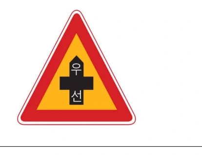

882. What does this safety sign indicate?

- ①It is a sign placed at a priority lane, indicating that there is an intersection with a road that is not a priority lane.
- ②It is a sign indicating an intersection with one-way traffic.
- ③It is a sign indicating that there is a point on the road with same-direction traffic where passage in both directions is required.
- ④It is a sign indicating the start of two-way traffic.
Show answer
Answer
① It is a sign placed at a priority lane, indicating that there is an intersection with a road that is not a priority lane.
Reference
Road Traffic Act Enforcement Rules Appendix 6 Ⅱ. Individual standards. 1. Caution sign No. 106, when crossing a priority road with a non-priority road
Reference text is a machine translation for study.